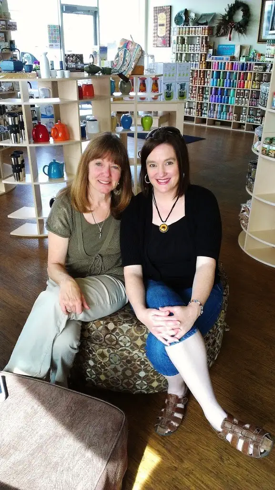
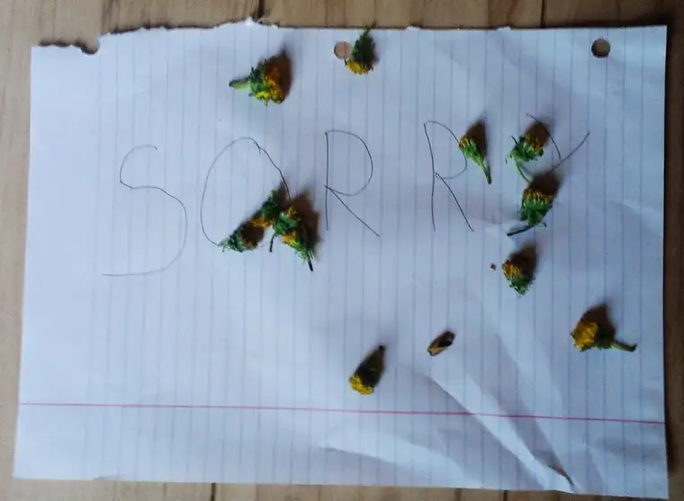

{kind=link}
When you’ve known someone for years through email, radio interviews, shared writings, common connections to certain cities and even churches, but never really had the chance to sit down and talk, three hours goes by in what feels like three minutes.

Patti McGuire Armstrong and I have known of each other for years, and have met face to face on many occasions, but always in a breeze-by until now. With 15 children between us, there always seemed to be some other need more pressing, preventing a full-out conversation.
But when I was invited to Bismarck last week to do an author visit, I had plenty reason to stay an extra day. Both my Mom and Patti reside there, and with my visit not falling on a Sunday this time, we finally were able to carve out a quiet moment in the afternoon to sit for a while at a tea shop, Steep Me a Cup.
{kind=link}
The place was bright and colorful and, really, the perfect spot to meet an “old” friend for the first time.
We sipped and talked, talked and sipped. A few texts interrupted as we did our usual, necessary multitasking. But mostly, we focused on each other, discovered even more commonalities and shared some of our inmost joys and challenges as Catholic mothers and writers.
Though our professional lives first brought us together, very little of our conversation hovered around our writing. Mostly, we focused on our living — our vocations as mothers/wives and how that intersects with faith.
In a way, I feel like Patti and I are bookends of the Catholic writers’ mothering world of North Dakota — she assuming the western part of the state, and I, the eastern. Not that there’s not plenty of other mothers in between, but we’re at a place in our lives when doors have really opened, and we’re doing our best to be solidly Catholic and communicating our joy and hope over our faith with others. To be in the same room with such a kindred spirit for three hours was pure blessing. I have no doubt our paths will cross many times again!
When I returned home, immediately I was reminded of the messiness of life at home. The needs were many, and so was sibling conflict. Eventually, that gave way to this:
{kind=link}

One of the kids’ consciences kicked in, but by the time I found the “sorry” sign littered with fresh-picked dandelions on my office floor, the “flowers” were already shriveled up. Nevertheless, the message came through loud and clear, and my heart melted as it always does when a move toward reconciliation happens within our family.
Speaking of messy families, I’m in the middle of reading Patti’s latest book, “Big-Hearted Families,” and I’m looking forward to sharing more about this gem of a book soon.
In the meantime, the school year is winding down for us here. Just four days left until summer. You can imagine the level of activity around here as we prepare for the final countdown and tie up all the loose ends.
What I’m most looking forward to this summer? Sleeping in! How about you?